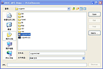

(click to run)
(click for full size)


FileChooser
(not available yet)
The JDesktop Integration Components (JDIC) project aims to make Java applications first-class citizens of current desktop platforms without sacrificing platform independence.
JDIC provides Java applications with access to facilities provided by the native desktop such as the mailer, the HTML rendering engine, and registered document viewing applications. Additionally it provides the mechanisms by which Java applications can integrate into the native desktop such as registering Java applications as document viewers on the desktop and creating desktop installer packages containing Java applications.
JDIC consists of a collection of Java packages (JDIC API), all with the package name prefix org.jdesktop.jdic, and a JNLP application packaging tool (JDIC Packager).
The JDIC Documentation page has links to articles, API documentation, implementation specifications, code examples, installation and configuration notes, and more.
You can download the API documentation and the latest release of the JDIC project.
If you have Java Web Start installed, you can download demos that showcase JDIC functionality. [PENDING: where is the code for these demos?]
| Demo (click to run) |
Screenshot (click for full size) |
Description |
|---|---|---|
|
[PENDING: This should describe which parts of the JDIC the demo uses, and what else is interesting about the demo.] | |
|
[PENDING: This should describe which parts of the JDIC the demo uses, and what else is interesting about the demo.] | |
|
FileChooser |
 | [PENDING: This should describe which parts of the JDIC the demo will use.] |
{kind=link}